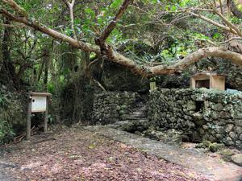
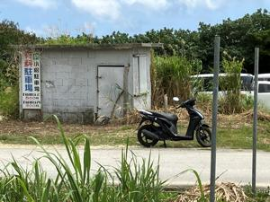
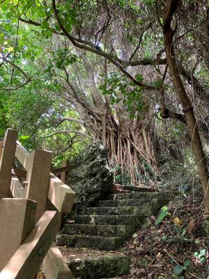
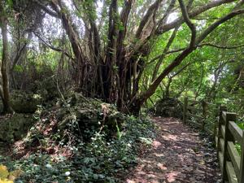
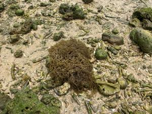
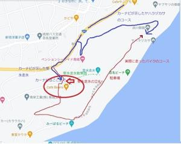

うるがいの話 ある日
最新: 不適切な案内板【うるがいの話 ある日】とは 一日だけのプログです
『うるがいの話』の最新一日だけのプログで、通信料が少なく経済的だ。カニの画像をクリックすると全ての日付が載る『うるがいの話』サイトを表示します
|
|
【うるがいの話】 うるがい(ｳﾙｶﾞｲ urugai)とは、『もずくがに』の名前でとても大きくなります。 |
|---|---|
|
|
【カミマヤーの話】 猫のことを方言でマヤーといいます。カミマヤー（kamimayaa）とは、神の猫のことです。 |
|
【たながぁの音楽】 たながぁ（ﾀﾅｶﾞｰ tanagaa）とは手長えびのことで、何種類かあり大きいのは車 エビぐらいになります。 |

|
【ぶながぁの話】 ぶながぁ(ﾌﾞﾅｶﾞｰ bunagaa)とは、赤い髪の毛、赤い身体、そして身長は１ｍ２０ｃｍ ぐらい、川の蟹を食べているの目撃された。場所は沖縄県国頭郡大宜味村のと ある村僕の隣近所に住んでいる爺さんから、聞いた話です。 |
|
|
【ギーマの話】 ギーマ(giima)とは、山原の里山に咲くスズランに似た、 花を付けます。実は食べられます、 気が付くと口の周りが紫になっています。 |
2023年04月22日 (土）不適切な案内板
15:07
    
濱川御嶽から受水走水を経由して、上方にあるカフェのすぐ南側に出る散策路
がある。南城市に合併する直前の玉城村時代に作られた。亜熱帯の森は、島尻
でも見られる。戦争で破壊された後復活してきた森だから６０数年の歴史だろ
う。なかなかいいので、時々散策する。女性ひとりだと、ちょっと怖くなる感
じだ。この周辺のところどころに「受水走水散策路」という案内表示があるが
、それを見て、このコースを見つけ歩くのは至難の業だ。だから「知る人ぞ知
る」のコースだ。もう少し親切な表示をお願いしたい。
ん、そのとうりだ。昨日受水走水へ行くの迷ったのか、原因究明をした。カー
ナビと受水走水からかなり離れたとことにあるコーヒー店ｃａｆｅ Ｂｅａｎ
＇ｓの付近にあった『受水走水』と「受水走水散策路」の案内板である！。そ
れを見た私は近くに聖地がある筈と、バイクを降りてウロウロしたが探せず。
諦めてヘルメットを被り、エンジンを始動させると電話が、すぐさま電話を取
るがヘルメットを外すまで時間がかかる、もしもしと答えると『もしもし○○
さんですか、クラーの修理に・・・』、私□□ですが、電話を間違えているよ
うです。スミマセンと言って相手は電話を切った。よりによって、間違い電話
とは、そうそう、惑わす案内板は撤去して欲しい。カーナビもカーナビだが。
ま、結果オーライなので、いいか。因みに「受水走水散策路」は整備されてお
り、この女性などが頻繁に利用しているのか暇があれば散策にはいいようだ。 
大学生の頃、松川の叔母さんに連れられ、みーばるビーチ（新原ビーチ）にモ
ーイやモズクの海藻を採ったことがある。そこから、糸満に近い名城ビーチに
小学生の頃、母親と妹達と行ったころがあり、そこで直ぐ下の妹が、幾つかの
落ちた小銭を見つけたのを覚えている。皆、天に行ってしまった。
１５時０３分 ビットコインの総資産 ￥１０、６４１（↓２２７）